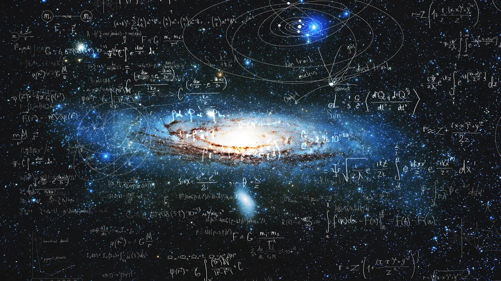

The Intersection of Physics, AI, Trading, and Consciousness: A Journey into the Future

Have you ever wondered how the fundamental laws of the universe could lead to the creation of machines that think like humans? Or how these machines might one day predict the stock market's next move with uncanny accuracy? What if, in the process, we unlock the secrets of consciousness itself? These questions aren't just the stuff of science fiction—they're at the heart of some of the most exciting fields today: Physics, Machine Learning (ML), Artificial Intelligence (AI), Trading, and Consciousness. In this blog post, we'll explore each of these topics, uncover their surprising connections, and see how they're shaping the future of humanity.
Physics: The Foundation of Everything
At the core of our understanding of the universe lies physics. It's the study of matter, energy, and the forces that govern their interactions. From the smallest subatomic particles to the vastness of galaxies, physics explains how everything works. The four fundamental forces—gravity, electromagnetism, the strong nuclear force, and the weak nuclear force—are the invisible hands shaping the cosmos.
Recent breakthroughs have pushed the boundaries of what we know. The discovery of the Higgs boson in 2012 confirmed the existence of the Higgs field, which gives particles their mass. Meanwhile, the detection of gravitational waves in 2015 opened a new way to observe cosmic events, like black hole collisions, that were previously invisible. These discoveries aren't just exciting for physicists—they have profound implications for technology, including AI and computing, which rely on the principles of quantum mechanics and other physical laws.
Machine Learning and AI: Teaching Machines to Think
While physics unravels the universe's mysteries, Machine Learning (ML) and Artificial Intelligence (AI) are revolutionizing how we interact with technology. AI refers to machines that can perform tasks requiring human-like intelligence, while ML, a subset of AI, allows systems to learn from data and improve over time without explicit programming.
Think of AI as a self-driving car. It doesn't just follow a pre-set path; it learns from its environment, adapting to new situations—like avoiding a pedestrian or navigating a detour. This ability to learn and adapt is transforming industries:
- Healthcare: AI helps diagnose diseases from medical images faster and more accurately than human doctors.
- Finance: Algorithms analyze market data to make investment decisions in milliseconds.
- Transportation: Self-driving cars are becoming a reality, promising safer and more efficient roads.
But AI isn't just about narrow applications. The dream is to create general AI—machines that can think, reason, and even understand emotions like humans. This brings us to the edge of another frontier: consciousness.
Trading: Predicting the Unpredictable
Trading, the art of buying and selling financial instruments like stocks or cryptocurrencies, has always been about predicting the future. Traders analyze patterns, news, and historical data to forecast market movements. But with the advent of AI and ML, trading is undergoing a revolution.
AI-powered algorithms can process vast amounts of data—news articles, social media posts, even satellite images—to identify trends invisible to the human eye. For example, hedge funds use AI to analyze sentiment on Twitter and predict how it might affect stock prices. These systems learn from their successes and failures, constantly refining their strategies.
However, AI in trading isn't without risks. The 2010 Flash Crash, where the U.S. stock market briefly lost and regained $1 trillion in value, was partly blamed on automated trading algorithms. As AI becomes more sophisticated, the question isn't just whether it can predict the market—but whether we can control it.
Consciousness: The Final Frontier
Now, we arrive at perhaps the most mysterious topic: consciousness. What does it mean to be aware of your own existence? Why do we have subjective experiences, like the taste of coffee or the feeling of happiness? This is known as the hard problem of consciousness, and it's puzzled philosophers and scientists for centuries.
Neuroscience has made strides in understanding how the brain works, mapping regions responsible for emotions, memories, and decision-making. Theories like Integrated Information Theory (IIT) attempt to quantify consciousness, suggesting that it arises from the complexity of information processing in the brain. But the question remains: could a machine ever be conscious?
This isn't just a philosophical debate. As AI systems become more advanced, we're forced to confront whether they could one day "wake up" and become self-aware. Imagine an AI that not only predicts the stock market but also understands its own existence. The implications—both exciting and terrifying—are profound.
Where These Fields Intersect: A Web of Possibilities
What's truly fascinating is how these fields overlap and fuel each other's progress.
AI in Physics
Machine learning is helping physicists tackle problems too complex for traditional methods. For example, AI algorithms analyze data from particle colliders like the Large Hadron Collider, identifying patterns that could lead to new discoveries. In astrophysics, AI classifies galaxies and predicts cosmic events, like the merger of black holes.
AI in Trading
As mentioned, AI is transforming trading by making predictions more accurate and faster. But it's also raising ethical questions. If an AI can outsmart human traders, what does that mean for the fairness of financial markets?
Consciousness and AI
The pursuit of conscious AI is perhaps the most ambitious goal. While we're far from creating a machine that can think and feel like a human, research in this area is pushing the boundaries of both AI and our understanding of the brain. Projects like the Global Consciousness Project explore whether human consciousness can influence random events, while neuroscientists use AI to simulate brain activity.
These intersections aren't just academic—they have real-world implications. For instance, quantum computing, which relies on principles of quantum physics, could revolutionize AI by solving problems that are currently impossible. In trading, quantum AI could predict market shifts with unprecedented accuracy. And if we ever create a conscious AI, it could help us understand our own minds in ways we can't yet imagine.
The Future: A Call to Explore
We stand at the crossroads of discovery. Physics continues to unlock the secrets of the universe, while AI and ML are making machines smarter than ever. Trading is becoming a high-stakes game of algorithms, and the mystery of consciousness beckons us to explore what it means to be human.
But this is just the beginning. Whether you're a scientist, a trader, or simply curious about the world, there's never been a more exciting time to dive into these fields. Here's how you can get started:
- Learn the basics of physics through online courses or books like A Brief History of Time by Stephen Hawking.
- Explore AI and ML with free resources like Coursera's Machine Learning course by Andrew Ng.
- Dive into trading by experimenting with simulation platforms or reading about algorithmic trading.
- Ponder consciousness through thought-provoking reads like Consciousness Explained by Daniel Dennett.
Remember, the future isn't just something we predict—it's something we create. By understanding the connections between physics, AI, trading, and consciousness, we can shape a world that's not only smarter but also more aware of its own potential.
Final Thoughts
As Stephen Hawking once said, "The greatest enemy of knowledge is not ignorance; it is the illusion of knowledge." In these rapidly evolving fields, humility and curiosity are our greatest tools. Whether we're exploring the quantum realm, teaching machines to learn, predicting market trends, or unraveling the mysteries of the mind, the journey is just as important as the destination.
So, what's your next step? Will you dive into the world of physics, experiment with AI, or ponder the nature of consciousness? Whatever path you choose, you're part of a thrilling adventure—one that's redefining what it means to be human in an increasingly complex universe.
"The greatest enemy of knowledge is not ignorance; it is the illusion of knowledge."
— Stephen Hawking